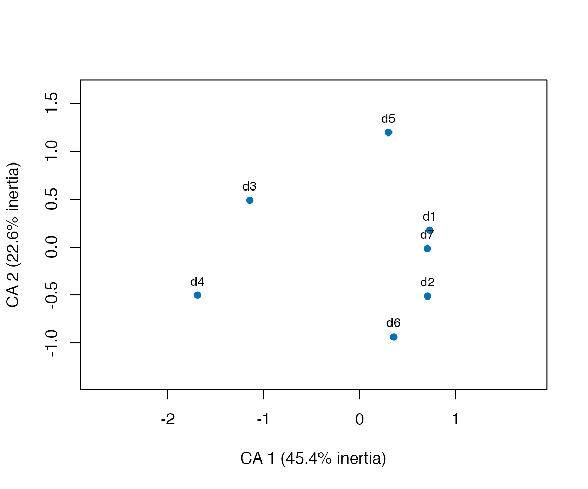
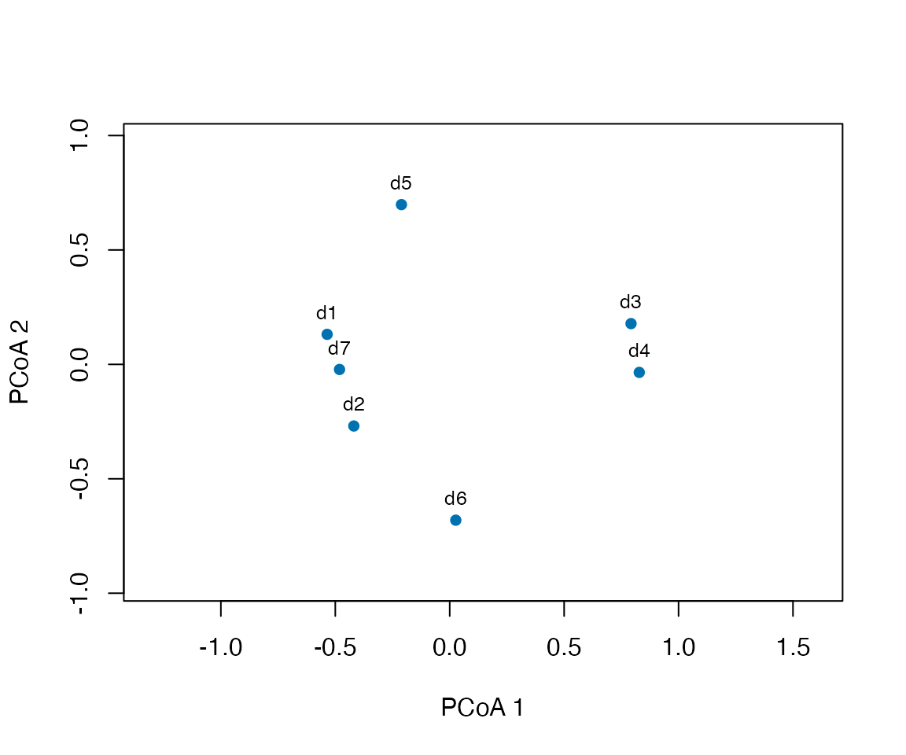
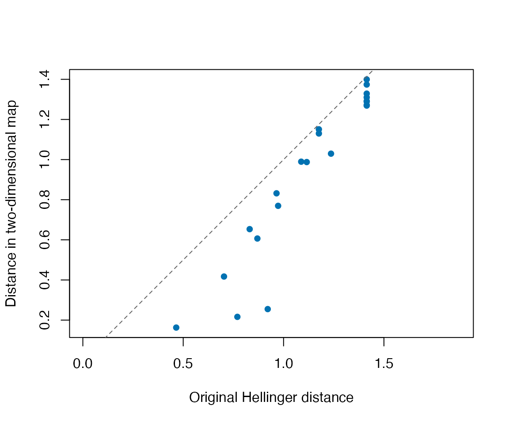
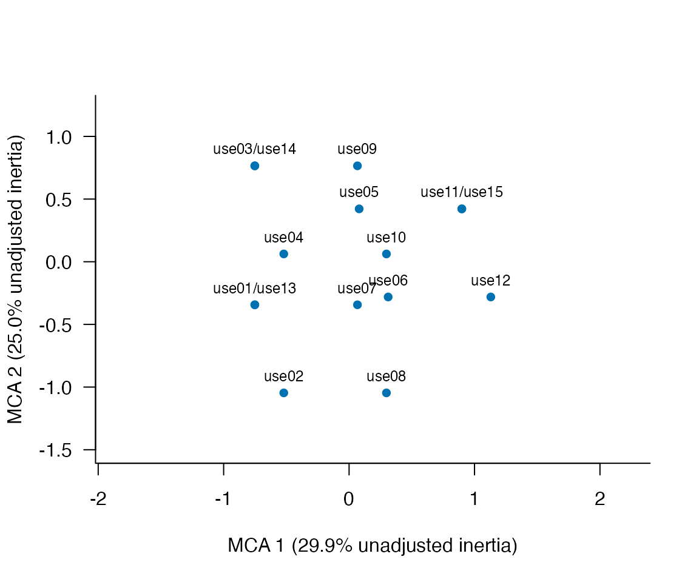

Explore lexical composition and categories with CA, MCA and MDS
Source:vignettes/lexical-ordination.Rmd
lexical-ordination.RmdWhich documents use similar vocabulary, and which words help explain their differences? Correspondence analysis (CA) describes a document-by-term count table. Classical multidimensional scaling (MDS, also called principal coordinates analysis or PCoA) represents a chosen set of document dissimilarities. The choice of dissimilarity defines what “similar” means; a map does not establish semantic similarity, proficiency, a causal effect, or a statistically significant group.
This guide uses ldfreq 0.3.0.9018 or later. Its
helpers are explicitly sourced installed examples, not exported
functions. MDS uses R’s stats::cmdscale(); CA requires the
optional ca package (install.packages("ca")).
No new tokenizer or model is needed. The example uses authored counts to
make the calculations checkable, not empirical learner differences.
The occurrence-MCA example requires 0.4.0.9001 or later, not stable 0.4.0. It describes several nominal variables coded for each original occurrence, rather than a document-by-term frequency table.
Begin with the counted documents
library(ldfreq)
demo <- new.env(parent = globalenv())
sys.source(system.file("examples", "lexical-ordination-demo.R",
package = "ldfreq", mustWork = TRUE), demo)
helper <- demo$helper
tab <- demo$tab
print(tab$documents, row.names = FALSE)
#> document_id requested source_tokens kept_tokens missing_terms counted_tokens
#> d1 TRUE 8 7 0 7
#> d2 TRUE 6 6 0 6
#> d3 TRUE 7 7 0 7
#> d4 TRUE 6 6 0 6
#> d5 TRUE 6 6 0 6
#> d6 TRUE 6 6 0 6
#> d7 TRUE 7 7 0 7
#> partial TRUE 2 2 1 1
#> empty TRUE 0 0 0 0
#> removed TRUE 1 0 0 0
#> outside FALSE 1 1 0 0
#> status active_tokens
#> active 7
#> active 6
#> active 7
#> active 6
#> active 6
#> active 6
#> active 7
#> incomplete_terms 0
#> empty_source 0
#> no_selected_tokens 0
#> not_requested 0
tab$active_counts
#> learn read write speak tree river rain wind
#> d1 4 2 1 0 0 0 0 0
#> d2 3 1 0 2 0 0 0 0
#> d3 0 0 0 0 4 2 1 0
#> d4 0 0 0 0 2 0 3 1
#> d5 2 0 2 0 0 2 0 0
#> d6 0 3 0 2 1 0 0 0
#> d7 1 4 2 0 0 0 0 0Seven documents contribute 45 tokens. partial has an
unavailable selected lemma, so its entire profile is excluded.
empty has no source tokens, removed has no
selected tokens, and outside was not requested. These
states remain separate. counts retains available counts for
all requested documents; active_counts contains exactly the
complete, nonempty profiles fitted below. The former must not be
silently substituted for the latter.
The source, original token rows and selection mask are retained. The recipe does not normalize case or Unicode, infer lemmas, combine documents, or treat missing labels as absence. Word identity is the exact selected string.
For your own unchanged
lexdiv_import_annotations() result, load the helpers
explicitly and supply IDs and a selection rule. The annotation guide describes
source-aligned inputs.
helper <- new.env(parent = globalenv())
for (file in c("concordance.R", "lexical-ordination.R"))
sys.source(system.file("examples", file, package = "ldfreq", mustWork = TRUE), helper)
tab <- helper$ordination_table(
annotations, document_ids = study_document_ids,
preprocessing_id = "lemma-exclude-punctuation-v1",
term_col = "lemma", keep = keep,
min_count = 1L, min_documents = 1L
)keep has one nonmissing logical value per original
token. The preprocessing label describes a policy; it does not prove
that different annotation pipelines are equivalent. The minimum count
and document-frequency thresholds use the requested documents with
complete selected terms and are applied once, before fitting.
features retains counts and selection decisions. A document
with no retained features remains in the audit as
no_selected_features.
Thresholds change the analyzed vocabulary and hence the geometry.
Choose them for the research question and report them; do not tune them
to make groups separate. The default retains every term in the complete
selected profiles. The example bounds dense document-term and
document-distance matrices using max_cells = 1e6; it is
intended for a bounded research collection.
CA: inspect the words that define the configuration
has_ca <- requireNamespace("ca", quietly = TRUE)
if (has_ca) {
ca_result <- helper$ordination_ca(tab, k = 2)
print(ca_result$axes)
print(ca_result$diagnostics)
first_axis <- subset(ca_result$columns, axis == 1)
print(first_axis[order(first_axis$contribution, decreasing = TRUE), ], row.names = FALSE)
}
#> axis eigenvalue inertia_fraction
#> 1 1 0.8410747205 0.4536757505
#> 2 2 0.4193407701 0.2261924345
#> 3 3 0.2895034125 0.1561581566
#> 4 4 0.2252001062 0.1214729497
#> 5 5 0.0779002735 0.0420194118
#> 6 6 0.0008922818 0.0004812968
#> $total_inertia
#> [1] 1.853912
#>
#> $requested_dimensions
#> [1] 2
#>
#> $effective_dimensions
#> [1] 2
#>
#> $eigenvalue_tolerance
#> [1] 8.410747e-11
#>
#> id axis coordinate mass contribution cos2
#> rain 1 -1.6959986 0.08888889 0.30399319 0.79447114
#> tree 1 -1.1870903 0.15555556 0.26062645 0.75582475
#> learn 1 0.6909648 0.22222222 0.12614347 0.44709388
#> read 1 0.6583431 0.22222222 0.11451372 0.41847030
#> wind 1 -1.8441299 0.02222222 0.08985369 0.52320232
#> write 1 0.5966622 0.11111111 0.04703054 0.23961929
#> speak 1 0.5775868 0.08888889 0.03525717 0.12131146
#> river 1 -0.4622453 0.08888889 0.02258177 0.08608317CA compares row profiles using column marginal frequencies and
weights documents by their token totals. Longer documents therefore have
greater mass; it does not make all documents equally influential. The
rows and columns tables report principal
coordinates, mass, contribution (a proportion, not a percentage) and
cos². Contribution describes a point’s role in an axis. Cos² describes
how well that axis represents the point; it is NA for
points with numerically zero distance to the centroid. A distant rare
word need not contribute much.
if (has_ca) helper$ordination_plot(ca_result)
if (has_ca) helper$ordination_plot(ca_result, which = "terms", monochrome = TRUE)Document and term maps are separate principal-coordinate maps. Do not
compare their plotted row-to-column distances as if they measured
association. In these authored documents, the school-related and
nature-related words help explain the dominant contrast; this is a
vocabulary-composition description, not a validated topic or ability
scale. Read the contributions and cos² before naming an axis. CA has at
most min(documents - 1, terms - 1) nontrivial dimensions;
rank-one inputs receive a one-dimensional display. Identical profiles
have no nonzero CA inertia and are reported as not analyzable.
MDS: choose the meaning of dissimilarity
Jaccard dissimilarity is 1 - shared types / union types.
Hellinger distance here is the Euclidean distance between square-root
relative-frequency profiles, without the optional 1/sqrt(2)
scaling. Jaccard ignores repetition. Hellinger retains differences in
allocation among words. Neither removes the sampling uncertainty of
short documents; Jaccard also depends on the observed type sets.
jaccard <- helper$ordination_mds(tab, distance = "jaccard", k = 2)
hellinger <- helper$ordination_mds(tab, distance = "hellinger", k = 2)
as.matrix(jaccard$distance)["d1", "d7"]
#> [1] 0
as.matrix(hellinger$distance)["d1", "d7"]
#> [1] 0.4651756d1 and d7 use exactly the same types, so
their Jaccard distance is zero. Their allocation of tokens differs, so
their Hellinger distance is positive. These results answer different
questions; they do not show that one distance is universally better. The
original distance object retains document labels. Directional coverage
is not a symmetric distance and is not accepted here.
helper$ordination_plot(hellinger)
MDS axes are coordinates, not automatically interpretable lexical
traits. Their sign or orientation can change while all interpoint
distances remain identical. The plotting helper uses equal axis units
and returns the plotted data invisibly. Use
monochrome = TRUE for black and white. Group labels, if
added, must be matched by document ID and do not test a group effect.
Repeated observations retain their writer/task/occasion information
separately; MDS does not model their dependence. Independently fitted
maps cannot be compared by raw coordinates.
Check what a two-dimensional map loses
jaccard$diagnostics
#> $requested_dimensions
#> [1] 2
#>
#> $effective_dimensions
#> [1] 2
#>
#> $negative_eigenvalues
#> [1] 1
#>
#> $negative_inertia_fraction
#> [1] 0.001846276
#>
#> $eigenvalue_tolerance
#> [1] 1.095259e-10
#>
#> $distance_rmse
#> [1] 0.08992803
#>
#> $relative_distance_error
#> [1] 0.1128306
#>
#> $GOF
#> [1] 0.8834979 0.8851321
#>
#> $engine_warnings
#> character(0)
hellinger$diagnostics
#> $requested_dimensions
#> [1] 2
#>
#> $effective_dimensions
#> [1] 2
#>
#> $negative_eigenvalues
#> [1] 0
#>
#> $negative_inertia_fraction
#> [1] 0
#>
#> $eigenvalue_tolerance
#> [1] 2.053396e-10
#>
#> $distance_rmse
#> [1] 0.2436704
#>
#> $relative_distance_error
#> [1] 0.2102844
#>
#> $GOF
#> [1] 0.776418 0.776418
#>
#> $engine_warnings
#> character(0)
head(hellinger$pairs)
#> document_a document_b original_distance fitted_distance
#> 1 d1 d2 0.7032206 0.4171164
#> 2 d1 d3 1.4142136 1.3287895
#> 3 d1 d4 1.4142136 1.3740066
#> 4 d1 d5 0.8310792 0.6533169
#> 5 d1 d6 1.1153793 0.9877046
#> 6 d1 d7 0.4651756 0.1626916distance_rmse is the root mean squared difference
between the original and plotted distances.
relative_distance_error divides their sum of squared errors
by the sum of squared original distances before taking the square root;
it is not NMDS stress. The example’s Jaccard matrix has a negative
eigenvalue. Its negative magnitude relative to total absolute eigenvalue
magnitude is retained, with a relative eigenvalue tolerance of
1e-10. No additive correction or silent distance
transformation is applied. Non-Euclidean geometry and omission of
positive dimensions can both prevent distance reconstruction. There is
no automatic acceptability threshold for the resulting map.
with(hellinger$pairs, {
plot(original_distance, fitted_distance, asp = 1, pch = 16, col = "#0072B2",
xlab = "Original Hellinger distance", ylab = "Distance in two-dimensional map")
abline(0, 1, lty = 2, col = "grey40")
})
This plot overlays the identity line on the original and reproduced
distances. Inspect pairs far from that line before interpreting local
neighborhoods. All-zero distances have no nontrivial configuration. Zero
distances between some nonempty documents are retained, not replaced by
arbitrary small positive values. The recipe exposes the requested and
effective dimension counts and any recorded rank warning from
cmdscale().
Return to the evidence and save the complete analysis
helper$ordination_occurrences(tab, "learn")
#> document_id segment_id token_index start end token_row term
#> 1 d1 s1 1 1 5 1 learn
#> 2 d1 s1 2 7 11 2 learn
#> 3 d1 s1 3 13 17 3 learn
#> 4 d1 s1 4 19 23 4 learn
#> 8 d2 s1 1 1 5 9 learn
#> 9 d2 s1 2 7 11 10 learn
#> 10 d2 s1 3 13 17 11 learn
#> 27 d5 s1 1 1 5 28 learn
#> 28 d5 s1 2 7 11 29 learn
#> 39 d7 s1 1 1 5 40 learn
#> text surface
#> 1 learn learn learn learn read read write . learn
#> 2 learn learn learn learn read read write . learn
#> 3 learn learn learn learn read read write . learn
#> 4 learn learn learn learn read read write . learn
#> 8 learn learn learn read speak speak learn
#> 9 learn learn learn read speak speak learn
#> 10 learn learn learn read speak speak learn
#> 27 learn learn river river write write learn
#> 28 learn learn river river write write learn
#> 39 learn read read read read write write learn
pair <- lexdiv_term_overlap(
colnames(tab$active_counts)[tab$active_counts["d1", ] > 0],
colnames(tab$active_counts)[tab$active_counts["d3", ] > 0],
document_ids = c("d1", "d3"), measures = "jaccard_types", details = "terms"
)
pair$shared_terms
#> [1] term token_count_a token_count_b
#> <0 rows> (or 0-length row.names)
pair$unique_to_a
#> term token_count_a
#> 1 learn 1
#> 2 read 1
#> 3 write 1
pair$unique_to_b
#> term token_count_b
#> 1 rain 1
#> 2 river 1
#> 3 tree 1Occurrence rows retain document, segment, token and character offsets plus the original text. Optional context searches can use the existing concordance workflow, with the saved active token mask. The pair comparison above verifies the type-based interpretation; it does not reproduce Hellinger distance because that distance uses frequencies.
For research, replace path below with a lasting private
path such as "ordination-record.rds". Relative paths start
at getwd(); temporary files can disappear when R
closes.
record <- list(table = tab, ca = if (has_ca) ca_result else NULL,
jaccard = jaccard, hellinger = hellinger, session = sessionInfo())
path <- tempfile(fileext = ".rds") # Choose a persistent private path for your study.
saveRDS(record, path, version = 2)
reopened <- readRDS(path)
helper$ordination_validate(reopened$table)
helper$ordination_validate(reopened$jaccard)
stopifnot(identical(reopened, record))In another R session, use the same package snapshot and your saved path:
library(ldfreq)
helper <- new.env(parent = globalenv())
for (script in c("concordance.R", "lexical-ordination.R"))
sys.source(system.file("examples", script, package = "ldfreq", mustWork = TRUE), helper)
reopened <- readRDS("ordination-record.rds")
helper$ordination_validate(reopened$table)
helper$ordination_validate(reopened$hellinger)
helper$ordination_occurrences(reopened$table, "learn") # Choose a term in your saved table.
helper$ordination_plot(reopened$hellinger)This inspects saved counts and coordinates without fitting CA or MDS
again. Keep the recorded calculation session unchanged; a new
sessionInfo() describes the current reporting session. The
saved table contains source texts; keep it under the same access
restrictions as those texts. A CSV of coordinates is useful for display
but does not replace this record.
A report should state the observational unit and included IDs, token/lemma and selection policy, excluded-document counts and reasons, feature thresholds, distance or CA weighting, dimensions, diagnostics and software versions. For example: “We retained seven complete nonempty profiles (45 tokens), excluding one document with a missing selected lemma, one empty source and one document without selected tokens. We described lexical composition by CA and examined type sharing and frequency composition with separately defined MDS distances.” Add the actual inertia and distance-reconstruction diagnostics from the saved results and describe their implications. Do not turn this authored example into an empirical claim about learner development.
Nonmetric MDS, automatic feature/distance selection and inferential tests are outside this recipe. CA and weighted PCoA with chi-square distances can describe the same geometry; agreement between such maps is not independent validation.
MCA: describe categories attached to original occurrences
Do meanings co-occur with different grammatical roles and determiner choices? Here a row is one occurrence of bank, with author-assigned sense, noun-phrase role and determiner. Writer and document IDs remain metadata. For two variables, inspect a cross-tabulation first; use this MCA route when a joint low-dimensional description of several variables helps the question. Do not discretize a continuous score merely to make it suitable for MCA.
mca_demo <- new.env(parent = globalenv())
sys.source(system.file("examples", "occurrence-mca-demo.R",
package = "ldfreq", mustWork = TRUE), mca_demo)
mca_helper <- mca_demo$helper
mca_table <- mca_demo$tab
mca_table$variables
#> variable
#> 1 sense
#> 2 role
#> 3 determiner
#> definition
#> 1 Author-intended financial institution or river edge; undecided is NA
#> 2 Target noun phrase: subject, direct object, or prepositional oblique
#> 3 The target phrase uses the (definite) or a (indefinite)
#> missing_n active_levels
#> 1 1 2
#> 2 1 3
#> 3 0 2
mca_table$observations
#> occurrence_id active status missing_variables
#> 1 u01 TRUE active
#> 2 u02 TRUE active
#> 3 u03 TRUE active
#> 4 u04 TRUE active
#> 5 u05 TRUE active
#> 6 u06 TRUE active
#> 7 u07 TRUE active
#> 8 u08 TRUE active
#> 9 u09 TRUE active
#> 10 u10 TRUE active
#> 11 u11 TRUE active
#> 12 u12 TRUE active
#> 13 u13 TRUE active
#> 14 u14 TRUE active
#> 15 u15 TRUE active
#> 16 u16 FALSE missing_active_category sense
#> 17 u17 FALSE missing_active_category role
mca_table$categories
#> category_id variable level observed_n active_n active
#> 1 v1l1 sense finance 9 8 TRUE
#> 2 v1l2 sense river 7 7 TRUE
#> 3 v1l3 sense unused-sense 0 0 FALSE
#> 4 v2l1 role object 5 5 TRUE
#> 5 v2l2 role oblique 6 5 TRUE
#> 6 v2l3 role subject 5 5 TRUE
#> 7 v3l1 determiner definite 11 9 TRUE
#> 8 v3l2 determiner indefinite 6 6 TRUE
#> status
#> 1 active
#> 2 active
#> 3 no_complete_observations
#> 4 active
#> 5 active
#> 6 active
#> 7 active
#> 8 activeThese are 17 authored occurrences, not human-subject data or model
predictions. Two rows lack an active code, leaving 15 complete rows and
seven active categories across three variables. An unused sense level
stays in the audit. The missing rows remain in occurrences
and can still be inspected; they are not a new category. The complete
rows represent writers A/B/C with counts 8/4/3, so equal occurrence
weighting is not equal writer weighting. Report exclusions by the study
groups relevant to your question.
For another source, load concordance.R,
lexical-ordination.R and occurrence-mca.R into
one environment. Supply an unchanged annotation import and an occurrence
data frame with unique occurrence_id, the six unchanged
source columns (document_id, segment_id,
token_index, start, end,
surface), your category columns and any study metadata.
Each original token can appear only once. source_text is
reserved for the source lookup output. This route concerns single-token
occurrences; it does not merge a phrase into a lexical token.
definitions is a named character vector describing the
active columns and coding_id identifies the coding
rules/version. Retain adjudication notes as metadata. Character
categories and unordered factors are accepted, with NA for
missing codes; numeric and ordered variables need a separate justified
analysis, not implicit conversion.
mca_table <- mca_helper$ordination_mca_table(
annotations, occurrences,
definitions = c(sense = "Your explicit sense inventory",
role = "Your grammatical-role categories", determiner = "Your categories"),
coding_id = "reviewed-coding-rules-v1"
)
if (has_ca) {
mca_result <- mca_helper$ordination_mca(mca_table, k = 2)
print(mca_result$axes)
print(mca_result$diagnostics)
print(mca_result$categories, row.names = FALSE)
}
#> axis eigenvalue inertia_fraction retained tied_with_next
#> 1 1 3.988996e-01 2.991747e-01 TRUE FALSE
#> 2 2 3.333333e-01 2.500000e-01 TRUE TRUE
#> 3 3 3.333333e-01 2.500000e-01 FALSE FALSE
#> 4 4 2.677670e-01 2.008253e-01 FALSE FALSE
#> 5 5 1.970247e-32 1.477685e-32 FALSE TRUE
#> 6 6 2.521422e-33 1.891067e-33 FALSE FALSE
#> $total_inertia
#> [1] 1.333333
#>
#> $indicator_inertia
#> [1] 1.333333
#>
#> $requested_dimensions
#> [1] 2
#>
#> $effective_dimensions
#> [1] 2
#>
#> $numerical_rank
#> [1] 4
#>
#> $eigenvalue_tolerance
#> [1] 3.988996e-11
#>
#> $retained_fraction
#> [1] 0.5491747
#>
#> $cut_through_tied_axes
#> [1] TRUE
#>
#> id axis coordinate mass distance contribution cos2
#> v1l1 1 -7.235716e-01 0.1777778 0.9354143 2.333333e-01 5.983495e-01
#> v1l2 1 8.269389e-01 0.1555556 1.0690450 2.666667e-01 5.983495e-01
#> v2l1 1 -5.255105e-01 0.1111111 1.4142136 7.692308e-02 1.380806e-01
#> v2l2 1 1.051021e+00 0.1111111 1.4142136 3.076923e-01 5.523226e-01
#> v2l3 1 -5.255105e-01 0.1111111 1.4142136 7.692308e-02 1.380806e-01
#> v3l1 1 -1.751702e-01 0.2000000 0.8164966 1.538462e-02 4.602688e-02
#> v3l2 1 2.627553e-01 0.1333333 1.2247449 2.307692e-02 4.602688e-02
#> v1l1 2 -2.730441e-16 0.1777778 0.9354143 3.976165e-32 8.520355e-32
#> v1l2 2 -2.695901e-16 0.1555556 1.0690450 3.391678e-32 6.359395e-32
#> v2l1 2 8.383612e-01 0.1111111 1.4142136 2.342832e-01 3.514247e-01
#> v2l2 2 2.435153e-01 0.1111111 1.4142136 1.976656e-02 2.964984e-02
#> v2l3 2 -1.081876e+00 0.1111111 1.4142136 3.901522e-01 5.852283e-01
#> v3l1 2 4.870305e-01 0.2000000 0.8164966 1.423192e-01 3.557981e-01
#> v3l2 2 -7.305458e-01 0.1333333 1.2247449 2.134788e-01 3.557981e-01
#> variable level
#> sense finance
#> sense river
#> role object
#> role oblique
#> role subject
#> determiner definite
#> determiner indefinite
#> sense finance
#> sense river
#> role object
#> role oblique
#> role subject
#> determiner definite
#> determiner indefiniteThe helper passes the complete indicator matrix to
ca::ca(). Each row contains one 1 per
variable. With n rows, Q variables and J observed categories, row mass
is 1/n, category mass is its count divided by nQ, and total
unadjusted inertia is (J-Q)/Q: 4/3 here. Axis fractions
use that full inertia, not a Benzécri/Greenacre adjustment or a
denominator limited to plotted axes. Contributions and cos² are
proportions as in CA. A rare category is retained with its count, not
silently pooled; distant categories need not dominate an axis. Variables
with fewer than two observed levels prevent fitting but keep their audit
table. The dense indicator matrix has the declared
max_cells limit; this is not a streaming or
full-memory-bound implementation.
The second and third eigenvalues coincide in this example. The first
two axes account for about 54.9% of unadjusted inertia, but selecting
only one direction from that tied eigenspace is not unique.
axes$tied_with_next and
diagnostics$cut_through_tied_axes expose this. Signs and
tied-axis rotations can change across implementations without changing
the complete geometry. Do not give those arbitrary orientations
independent linguistic meanings.
mca_labels <- NULL
if (has_ca) {
# Since 0.4.0.9002: keep original IDs and choose separate display names.
ids <- unique(mca_result$rows$id)
mca_labels <- setNames(sprintf("use%02d", seq_along(ids)), ids)
mca_display <- mca_helper$ordination_mca_plot(mca_result, labels = mca_labels)
mca_helper$ordination_mca_plot(mca_result, "categories", monochrome = TRUE)
}
#> Warning: Displayed axes touch a repeated eigenvalue; their orientation is not
#> unique. Inspect axes and diagnostics.
#> Warning: Displayed axes touch a repeated eigenvalue; their orientation is not
#> unique. Inspect axes and diagnostics.The optional labels argument requires 0.4.0.9002
or later. Review tools can return long occurrence IDs that
overlap or are clipped in a plot. Supply a character vector whose names
are exactly the displayed occurrence IDs (or category IDs on a category
map); its order need not match the result table. Choose short,
distinguishable display names. The returned mca_display
table keeps id, label, x and
y for every point, including co-located points. Use its
original id to look up source text; a display name is not a
replacement identifier. Without labels, the existing
ID/category labels are used.
The warning about repeated eigenvalues is intentional. These maps show the first two retained axes (one axis for rank-one inputs). Occurrence and category maps use separate principal coordinates: cross-map distances are not association strengths. Full tables retain co-located IDs even when display labels are combined. Since 0.4.0.9002, the CA/MCA/MDS plots group labels at coordinates equal to eight decimal places, including numerical zeroes. This is a display rule; stored and returned coordinates keep their full precision and points are not jittered. Interpret the coding scheme, category counts, contributions and representation quality together. Group labels used for display are not a test of group effects; MCA does not model repeated writers or capture every higher-order interaction.
mca_helper$ordination_mca_occurrences(mca_table, c("u01", "u16"))
#> document_id segment_id token_index start end surface occurrence_id writer_id
#> 1 d01 s1 2 5 8 bank u01 author-A
#> 2 d16 s1 5 21 24 bank u16 author-C
#> sense role determiner source_text
#> 1 finance subject definite The bank approved the loan.
#> 2 <NA> oblique definite We stopped near the bank.
mca_record <- list(table = mca_table, mca = if (has_ca) mca_result else NULL,
display_labels = mca_labels, session = sessionInfo())
mca_path <- tempfile(fileext = ".rds") # Choose a persistent private path for research.
saveRDS(mca_record, mca_path, version = 2)
stopifnot(identical(readRDS(mca_path), mca_record))In a fresh session, inspect stored coordinates and decisions without
the parser, original input files or optional ca package;
fitting is not rerun:
library(ldfreq)
mca_helper <- new.env(parent = globalenv())
for (script in c("concordance.R", "lexical-ordination.R", "occurrence-mca.R"))
sys.source(system.file("examples", script, package = "ldfreq", mustWork = TRUE), mca_helper)
mca_record <- readRDS("occurrence-mca-record.rds")
mca_helper$ordination_validate(mca_record$table)
mca_helper$ordination_validate(mca_record$mca)
mca_record$mca$categories
mca_helper$ordination_mca_occurrences(mca_record$table, "u01")
mca_helper$ordination_mca_plot(mca_record$mca, labels = mca_record$display_labels)Keep the complete record under the source text’s access conditions
and preserve its original calculation session. The record detects
accidental edits, not false coding or forged metadata. Cite the supplied
annotations/coding method, ldfreq archive and the ca paper
below. This example validates a computational route; it does not
establish sense accuracy, proficiency or causal explanations.
References
- Nenadic, O., & Greenacre, M. (2007). Correspondence analysis in R, with two- and three-dimensional graphics: The ca package. Journal of Statistical Software, 20(3), 1–13.
- R Core Team. Classical multidimensional scaling: cmdscale.
- Legendre, P., & Gallagher, E. D. (2001). Ecologically meaningful transformations for ordination of species data. Oecologia, 129, 271–280. Transformation definitions.